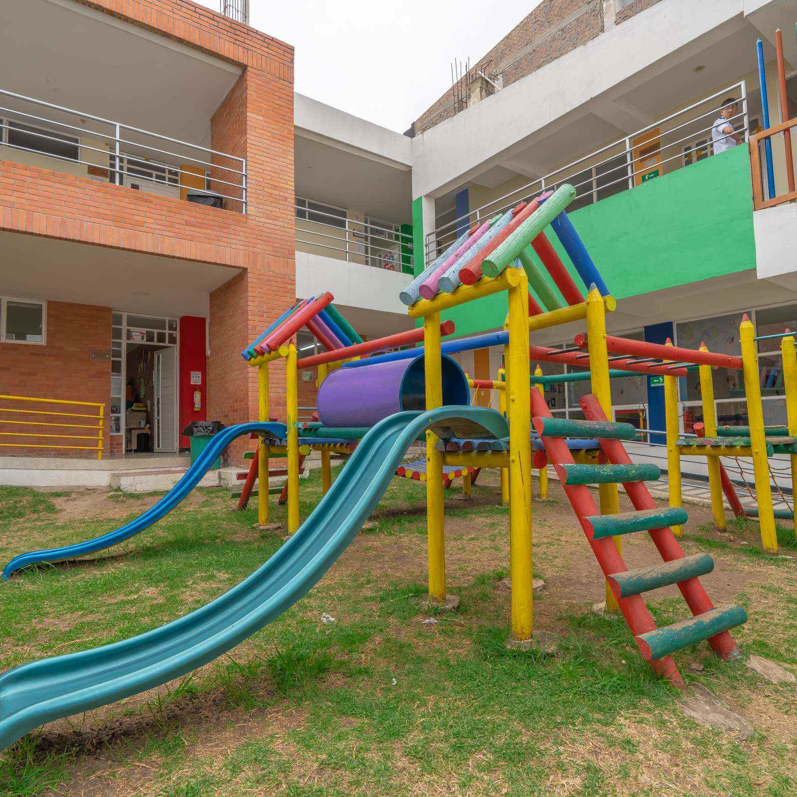
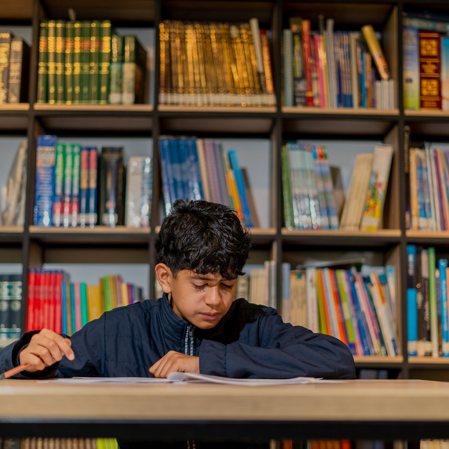
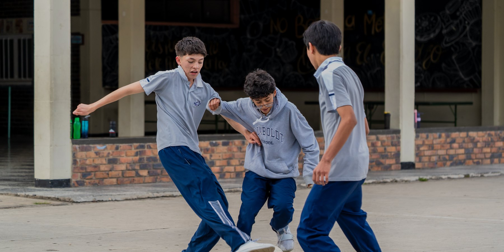

Espacios y programas
Espacios
- Laboratorio de química
- Aula de música
- Biblioteca
- Sala de informática
Programas
- Inglés
- Deportes
Logro reciente
Campeones del intercurso de fútbol de salón
Pendiente: año y categoría, [ ... ]

![[ PLACEHOLDER, reemplazar por foto real ]](fotos/06-laboratorio-quimica.jpg)
![[ PLACEHOLDER, reemplazar por foto real ]](fotos/07-aula-musica.jpg)

![[ PLACEHOLDER, reemplazar por foto real ]](fotos/09-sala-informatica.jpg)

![[ PLACEHOLDER, reemplazar por foto real ]](fotos/11-clase-ingles.jpg)